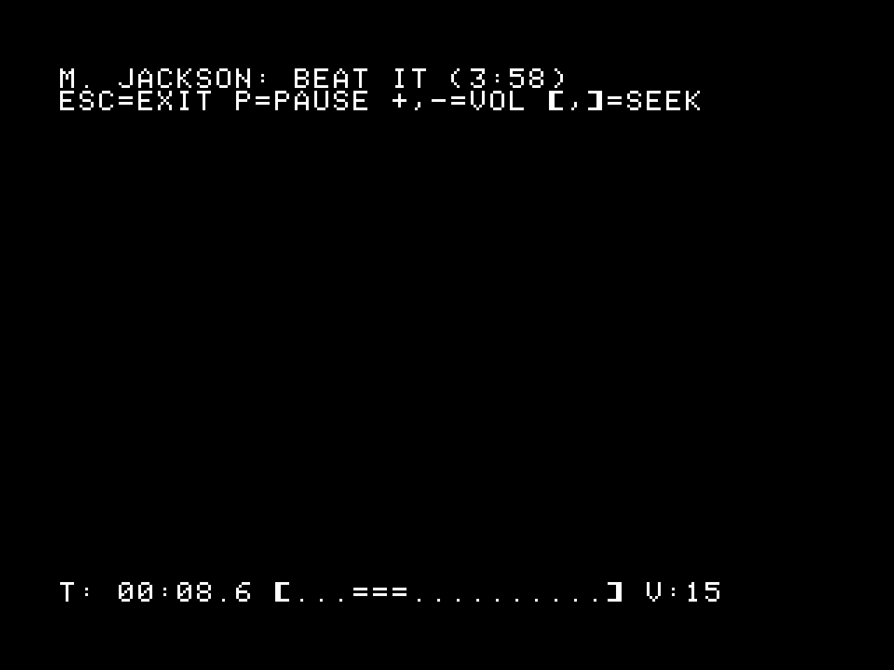

jukebox.hdv
32 MiB · HDV
Six tracks through four engines: a RAM-resident PSG demo, Chopin’s Fantaisie-Impromptu pre-loaded into VERA’s 128 KiB SRAM, streamed PSG for Beat It and Caribbean Blue, and 8 kHz PCM for Space Debris and The Wellerman. The player keeps a live 16-voice meter and a running clock on the last text row.